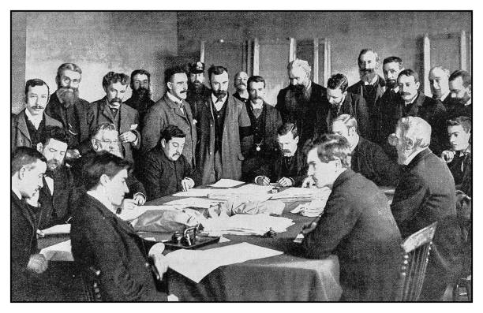

History of TechCon
TechCon started in 2005 as a small gathering of technology enthusiasts in Silicon Valley. Over the years, it has grown into one of the premier tech conferences globally, featuring cutting-edge innovations and thought leadership.
